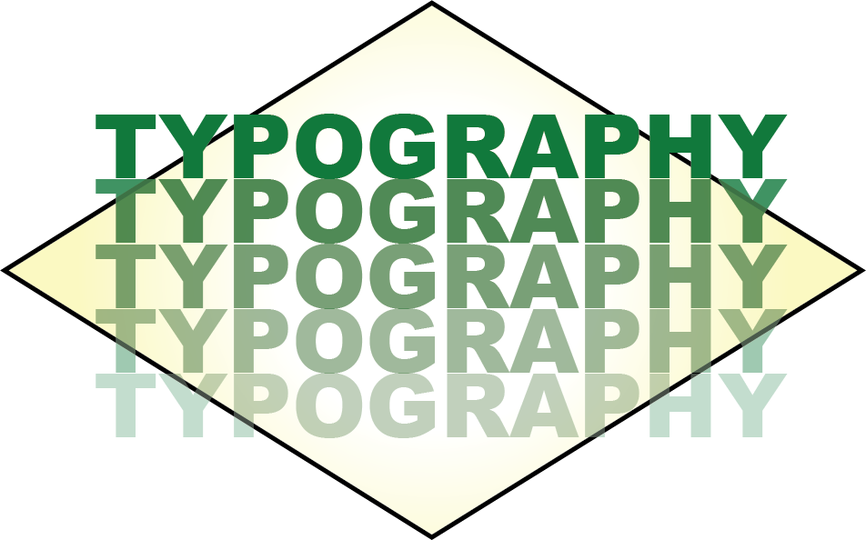
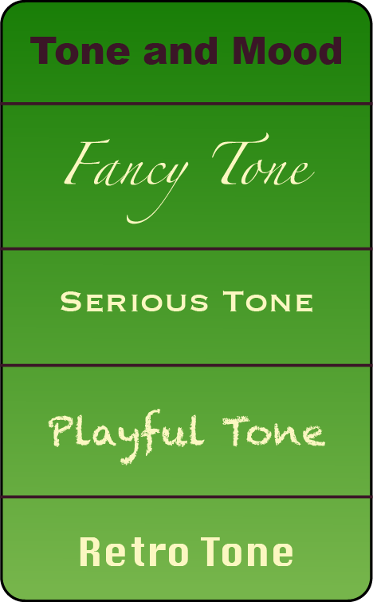
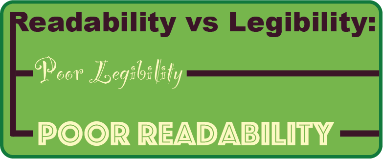

Aside from the color palette, the typography of a website is one of the most important and impactful influencers of user experience. The right typefaces elevate a design and make the content pleasant to read. The wrong typography, well, does the opposite and can ruin the visitor’s experience (and cause them to look for alternative websites). There are a number of things to consider when choosing typefaces for a website design. Let’s get straight into it.
Before you start diving into which fonts you want to use for a website, it’s important to plan out your typography. You need to have a solid understanding of how the typefaces you choose will be used. How many heading levels will there be? What about meta text for things like bylines on articles or things like photo captions? Will there be different body text sizes for different sections of the site? Are there any instances of big typography, such as over hero images? Make a list of what you need so that when you start exploring typefaces you can look at how they’ll appear at different sizes and in different styles based on your actual project, and not some theoretical idea of what’s necessary.
One of the most important determinations when planning the typography for any website is to decide what the tone and mood of the site should be. Is it formal or casual? Playful or serious? Modern or traditional? Once you know the tone the project should have, you can eliminate a lot of typeface options. You’re not going to use a font like Baskerville for a playful, modern site. Just like you wouldn’t use Futura for a site that’s supposed to be formal and traditional.
Knowing the scale at which you will use the typefaces in your design allows for more informed design decisions. This is why planning your typography at the outset of a project is so important for choosing the right typefaces.

There’s nothing that says you have to use more than one typeface (or type family) in your design. There are some excellent examples of websites that only use one typeface, such as the Stripe site or Akaya B. Ito’s site . That said, using more than one typeface is a great way to add both visual interest and reinforce your site’s visual hierarchy. There are a few things to consider when picking typefaces to use together:
- Figure out the main typeface you want to use. This could be either the type for your body copy or for your headlines. But you’ll want a starting place.
- Consider the contrast between the typefaces you want to combine. Sufficient contrast between typefaces is necessary, but that doesn’t mean you need two that are wildly different. In fact, too much contrast can mean one typeface overwhelms the other.
- The basic shape of each typeface is important. Combining typefaces with only slight differences in shape is generally a bad idea. You’ll either want to combine typefaces with basically the same underlying shapes (one of the easiest ways to compare is to look at the shape of the “O” in each—are they circular, condensed, wide, squared off, etc.?) or with drastically different shapes (such as a condensed typeface and a wide one).
- Pay attention to the x-height of each typeface. Generally speaking, you’ll want to combine typefaces with similar x-heights.
- A great option for beginners is to choose typefaces within the same family, such as Josefin Slab and Josefin Sans.
Combining fonts is part art and part science. Once you know the basic criteria that help create a solid combination, it takes a fair amount of trial-and-error to find the perfect options.
Licensing is one of the most overlooked parts of choosing web typography. If you’re using a web font service like Google Fonts or Typekit, this generally isn’t a concern, as the typefaces they offer are licensed for web use. But if you’re using fonts from other sources, you’ll need to be sure that they’re licensed for the type of project you’ll be using them on. Not all fonts are licensed for broad use. Some are inexpensive or free for personal use, but commercial use requires costly licensing fees. The other thing to consider is if the website you’re designing is part of a larger brand, where the typefaces used there will need to be used in other marketing materials. Make sure the licensing allows for those other uses.
Choosing the right typography for your website projects takes experimentation and trying different options until you find the one that fits. Typography can have a profound impact on the way visitors perceive a website. The right typography creates an enjoyable experience, while type that is hard to read or doesn’t match the tone of the site can negatively impact UX. It’s worth spending the time and resources to find the right fit.